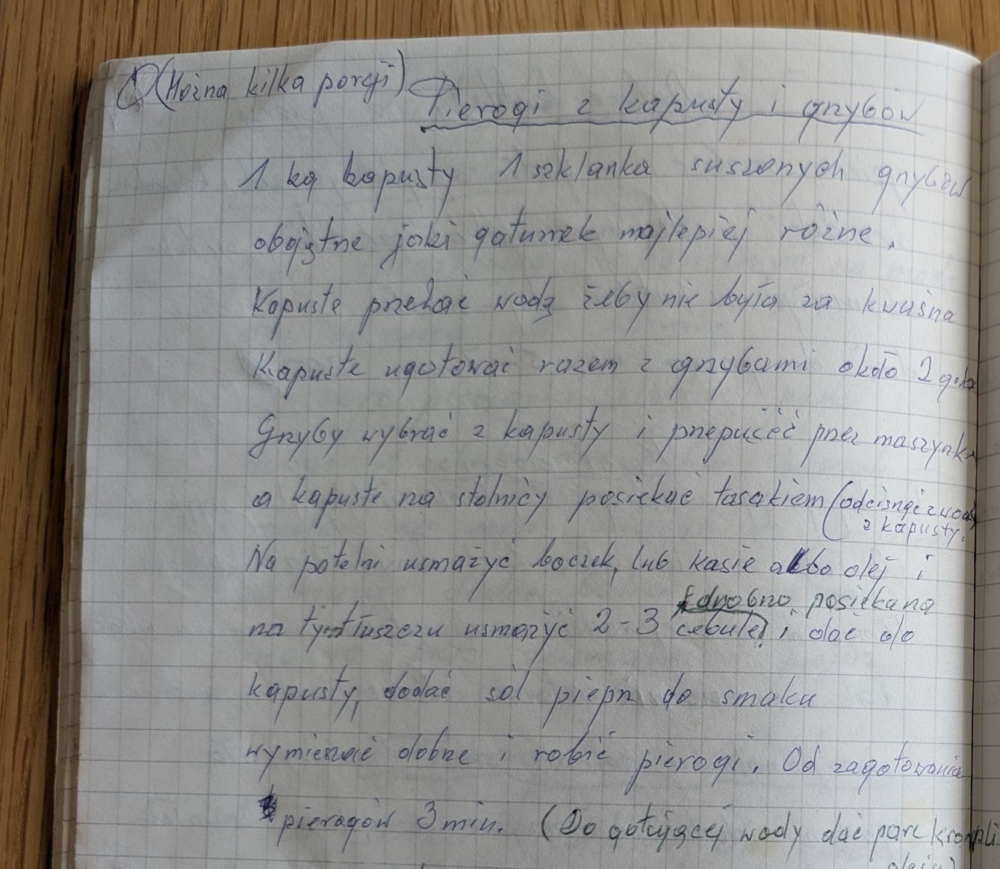
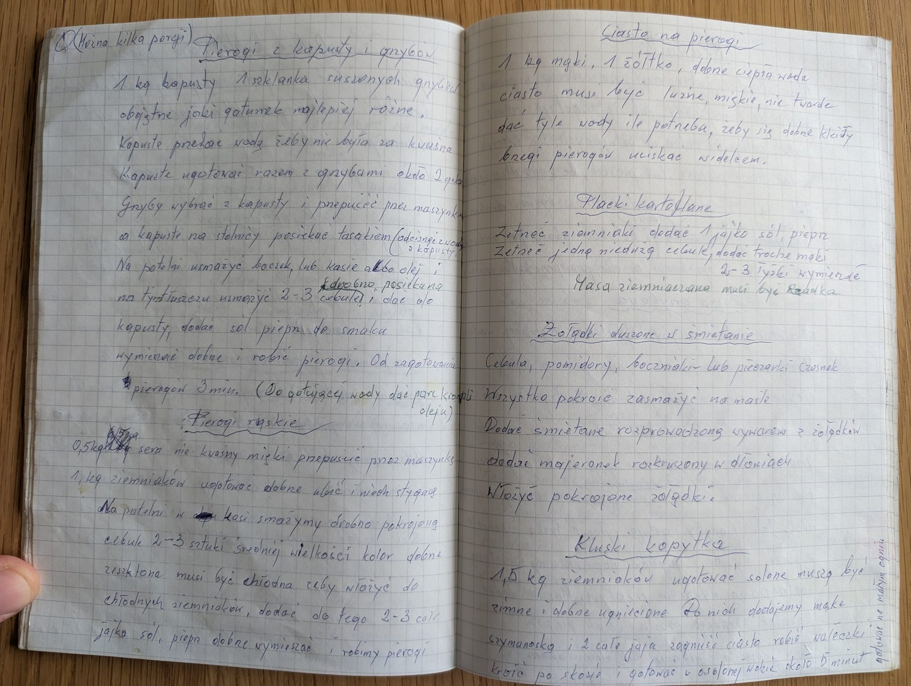

Pierogi z kapusty i grzybów


Składniki
- 1 kg kapusty kiszonej
- 1 szklanka suszonych grzybów (najlepiej różnych)
- boczek, margaryna Kasia albo olej
- 2-3 cebule
- sól, pieprz
- ciasto na pierogi
Przygotowanie
- Kapustę przelać wodą, żeby nie była za kwaśna.
- Kapustę ugotować razem z grzybami, około 2 godzin.
- Grzyby wybrać z kapusty i przepuścić przez maszynkę; kapustę odcisnąć z wody i posiekać tasakiem na stolnicy.
- Na patelni usmażyć boczek (albo rozgrzać margarynę lub olej) i usmażyć na tym 2-3 drobno posiekane cebule.
- Dodać do kapusty z grzybami, doprawić solą i pieprzem, dobrze wymieszać.
- Robić pierogi. Gotować 3 minuty od zagotowania; do gotującej wody dać parę kropli oleju.
Oryginalny zapis
(Można kilka porcji) Pierogi z kapusty i grzybów
1 kg kapusty 1 szklanka suszonych grzybów
obojętne jaki gatunek najlepiej różne.
Kapustę przelać wodą żeby nie była za kwaśna
Kapustę ugotować razem z grzybami około 2 godz.
Grzyby wybrać z kapusty i przepuścić przez maszynkę
a kapustę na stolnicy posiekać tasakiem (odcisnąć wodę
z kapusty)
Na patelni usmażyć boczek, lub kasię albo olej i
na tym tłuszczu usmażyć 2-3 drobno posiekane cebule i dać do
kapusty, dodać sól pieprz do smaku
wymieszać dobrze i robić pierogi. Od zagotowania
pierogów 3 min. (Do gotującej wody dać parę kropli
oleju)